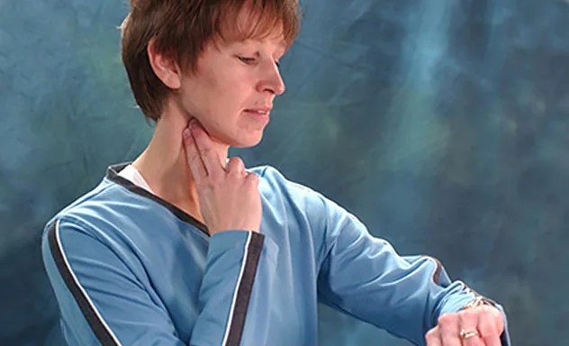
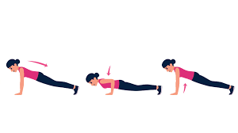
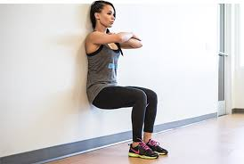

FITNESS CALCULATOR
1.For Aerobic fitness: Heart rate.
** Your heart rate at rest is a measure of heart health and fitness**
CHECK YOUR HEART BEAT RATE :
- To check your pulse over your carotid artery, place your index and middle fingers on your neck to the side of your windpipe.
- To check your pulse at your wrist, place two fingers over your radial artery, located on the palm side of your wrist.
METHOD :
After placing yor fingers wait untill you feel your pulse,then look at your watch and count the number of beats in 15 seconds. Multiply this number by 4 to get your heart rate per minute. Let's say you count 20 beats in 15 seconds. Multiply 20 by 4 for a total of 80 beats a minute.
RESULTS :
- 60 - 70approx = Good
- 71 to 80 = Average
- 81 to 100 = High (if checking after body work , considerable)
- 101 or more = Abnormally high (DANGEROUS!)

2.For Upper-Body Muscular Endurance: Push-Ups.
** Push-ups are a great indicator of your upper body strength and the progress of your muscle building exercise.**
METHOD :
Assume a push-up position (if you can`t do any push-ups, then assume a modified position with your knees and lower legs on the floor). Each repetition must be executed with good technique: the body should remain in a straight line, the head should be in line with the spine, and thearms should bend to at least 90 degrees.
RESULTS :
- 30 or more for men / 25 or more for women = Excellent
- 20 to 30 for men / 15 to 25 for women = Good
- 10 to 20 for men / 8 to 15 for women = Not bad!
- 10 or less for men / 8 oe less for women = Needs Work!(Alarming!)

3.For Lower-Body and Leg Endurance: Wall Sits.
** This exercise test in which you sit on an `invisible chair` against a wall until your thighs tighten is a great way to test your lower body strength.**
METHOD :
Find a wall space, lean your back against it and shuffle your feet forward. Slide your back down the wall until your knee and hip joints are at a right angle, and then start your stopwatch. You should look like you are sitting on an invisible chair. Hold the position as long as you can bear while breathing freely.
RESULTS :
- 76 seconds or more for men / 46 seconds or more for women = Very good
- 58 to 75 seconds for men / 36 to 45 seconds for women = Average
- 57 to 30 seconds for men / 35 to 20 seconds for women = Below average
- 30 seconds or less for men / 20 seconds or less for women = Poor(Frightening!)
